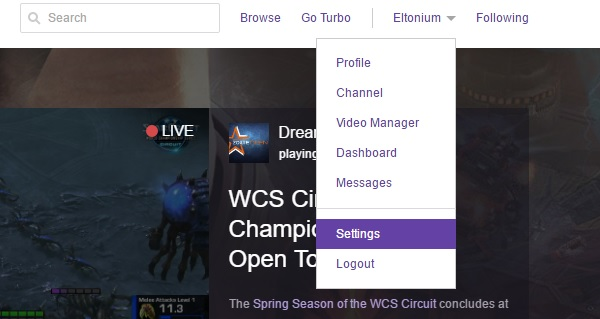
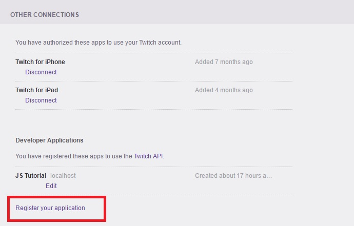
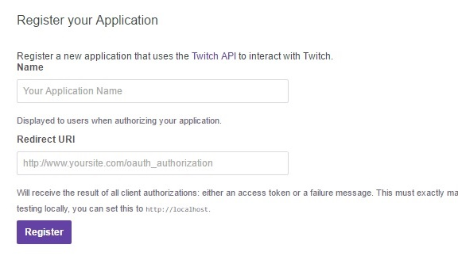
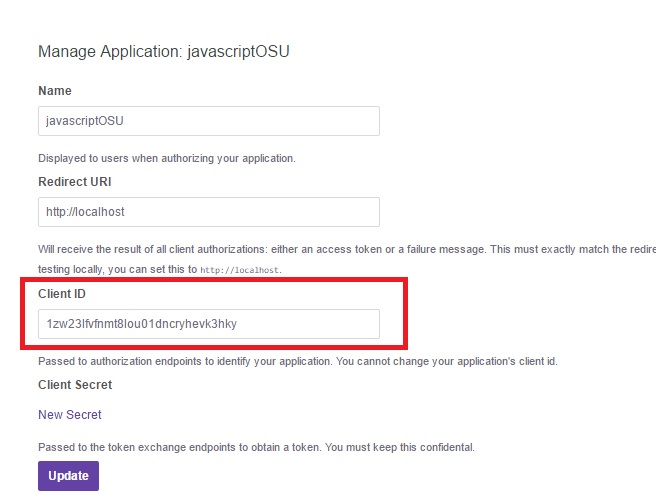

Twitch Client-ID
To work with the Twitch API, we have to get a Client ID (a.k.a. API Key) tied to our account.
- If you have not done so already, register an account and sign in on the Twitch home page
- Navigate to the Connections page in Twitch settings

- From there scroll down to the OTHER CONNECTIONS section and click on Register your application

- Fill in the application form. The Redirect URI is important if your application requires users to perform any sign-in. For now, set this as http://localhost for testing.

- You should now receive a Client ID. For tutorial purposes, we will use
1zw23lfvfnmt8lou01dncryhevk3hky. However, this is normally not shared and I highly encourage you to read up on securing your key for client-side javascript.

Now that we have our key, we are ready to start making API calls.